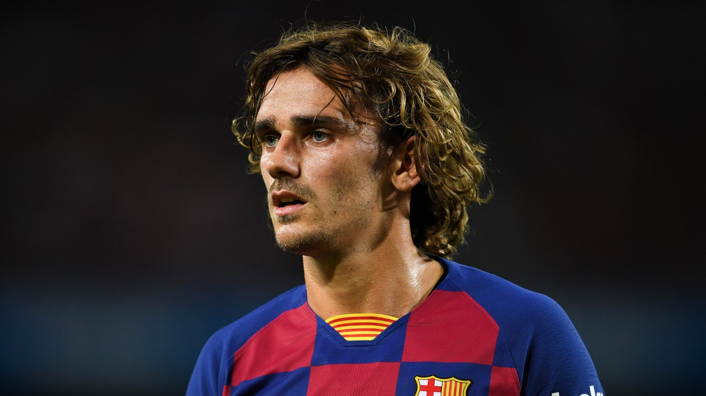
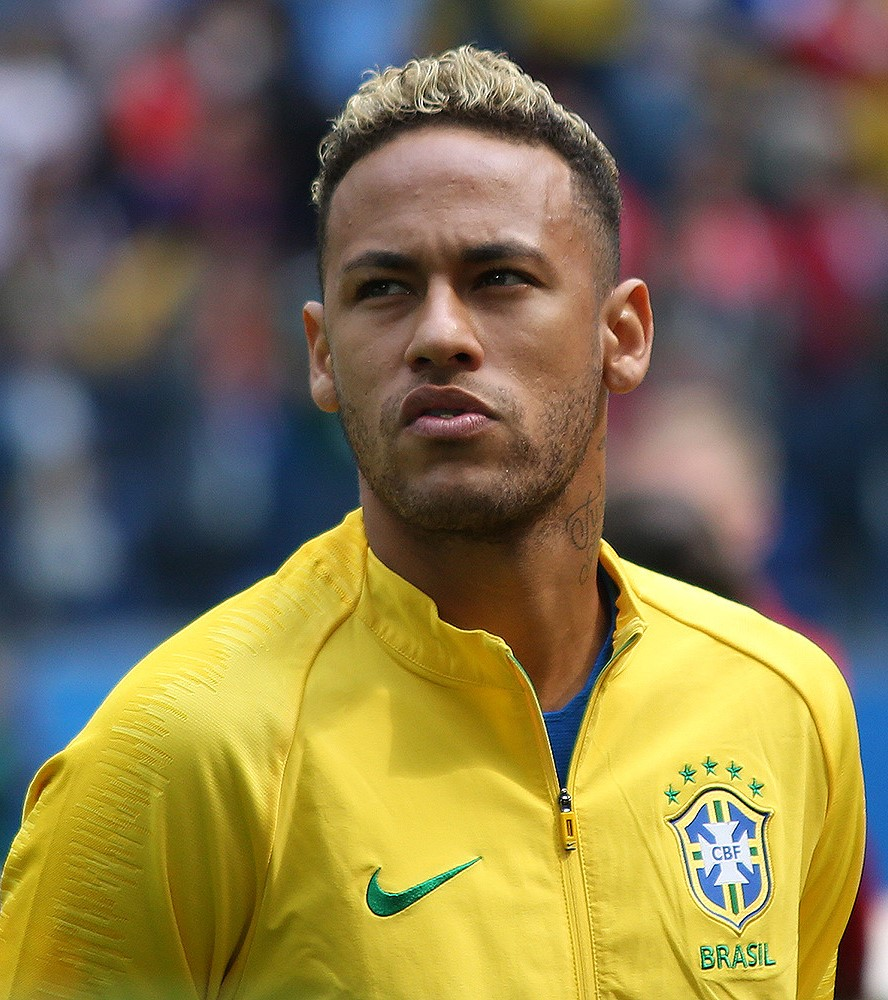
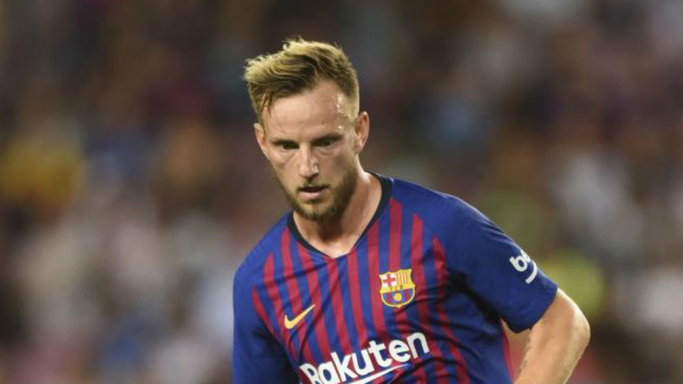
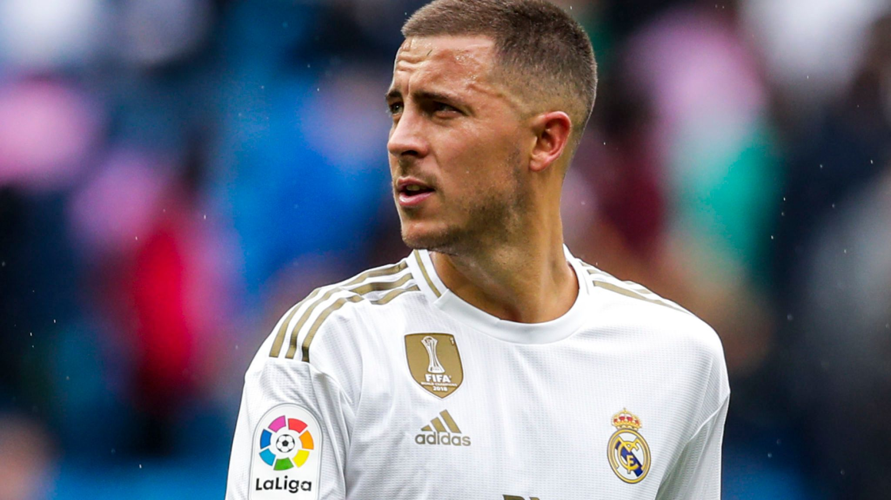

Cristiano Ronaldo
Cristiano Ronaldo dos Santos( born 5 February 1985) is a Portuguese professional footballer..
Cristiano Ronaldo dos Santos( born 5 February 1985) is a Portuguese professional footballer who plays as a forward for Serie A club Juventus and captains the Portugal national team.

Lionel Messi
Lionel Andrés Messi ( born 24 June 1987) is an Argentine professional footballer..
Lionel Andrés Messi ( born 24 June 1987) is an Argentine professional footballer who plays as a forward and captains both Spanish club Barcelona and the Argentina national team.

Antoine Griezmann
Antoine Griezmann ( born 21 March 1991) is a French professional footballer..
Antoine Griezmann ( born 21 March 1991) is a French professional footballer who plays as a forward for Spanish club Barcelona and the French national team.

Neymar Jr.
Neymar da Silva Santos Júnior ( born 5 February 1992) is a Brazilian professional footballer ..
Neymar da Silva Santos Júnior ( born 5 February 1992) is a Brazilian professional footballer who plays as a forward for Ligue 1 club Paris Saint-Germain and the Brazil national team.

Ivan Rakitić
Ivan Rakitić ( born 10 March 1988) is a Croatian professional footballer ..
Ivan Rakitić ( born 10 March 1988) is a Croatian professional footballer who plays as a central or attacking midfielder for Spanish club Barcelona and is also the vice-captain for the Croatia national team.

Eden Hazard
Eden Michael Hazard ( born 7 January 1991) is a Belgian professional footballer ..
Eden Michael Hazard ( born 7 January 1991) is a Belgian professional footballer who plays as a winger or attacking midfielder for Spanish club Real Madrid and captains the Belgium national team.